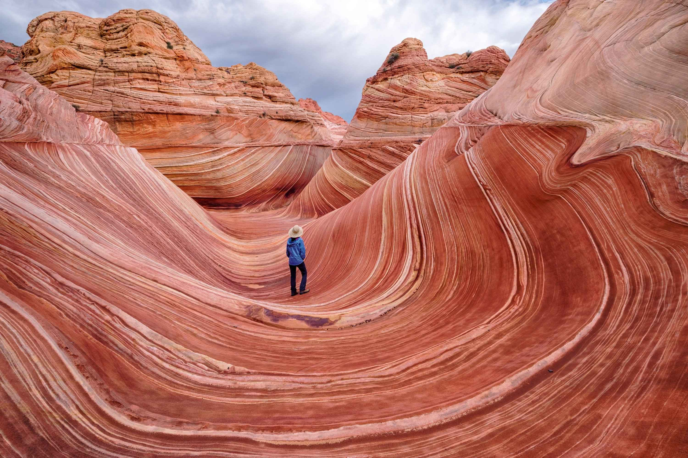
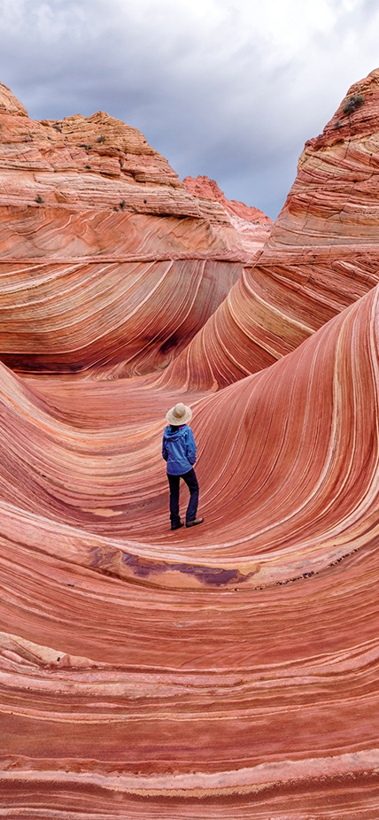

North America is a vast expanse of captivating scenery, sprawling urban centers, and boundless adventure around every corner, blending the marvels of natural beauty with human ingenuity in an unparalleled package. Venturing into the wilderness, you'll encounter towering forests, scorching deserts, mountains that seem to touch the sky, and an abundance of glistening lakes and rivers. On the flip side, the cities pulsate with a myriad of sensory experiences.
From trekking the glaciers of the northern Alaska to explore the crevasses, canyons, waterfalls, and caves of this remarkable landscape to taking a trip on the Loneliest Road in America where you chase some history while making plenty of your own,these journeys redefine experiential travel. Make this exclusive address your stay during your Alaskan Journey, situated amidst the vast expanse of 4.7 million acres encompassing Denali National Park, representing a remote enclave and esteemed as one of the most beautiful destinations in the world for admiring the aurora borealis from the luxury of your bed or contemplating meteor showers while lounging in a hammock next to your exclusive helipad. If remote places are not your thing, then swim with whale sharks in one of the world’s most diverse ecosystems – the Sea of Cortez.
Uncover the greatest outdoor show on earth – Calgary Stampede. Step back in time and experience river rafting, hiking and horseback exploration through the heart of the wild west – Wyoming. Nestled amidst Yellowstone's wonders and the rugged grandeur of Grand Teton National Park, these dramatic canyons and stark forests create the perfect backdrop for an exhilarating escape. Discover these wild lands as you navigate raging rivers on a raft, traverse valleys on horseback, and glide through serene lakes on a kayak. The remarkable wilderness of this land adds an unmatched richness to its iconic landscapes.
If you believe that untouched, untamed wilderness is elusive in North America, reconsider your perspective.
From the awe-inspiring national parks of the United States to the far reaches of the northern latitudes where remarkable seasonal phenomena unfold, to the vast expanse of the Last Frontier – Alaska, where wilderness sprawls on a scale unmatched by any other region in the contiguous states. Our crafted expeditions transport you to the remote corners of these renowned natural sanctuaries, eschewing the crowds in favor of secluded locales brimming with wildlife encounters.
Accommodations include atmospheric lodges and quaint inns, with wildlife experiences such as thrilling bear viewing sessions in Lake Clark National Park or embarking on a "grizzly ship" to witness the awe-inspiring migrations of humpback and gray whales along the Pacific Coast.
Venture to frigid Arctic waters, and observing belugas congregating in the hundreds at the confluence of the Churchill River and Hudson Bay. Or decide to walk with the world’s largest land predator Polar Bear in their natural habitat. From observing one of the largest caribou herds in North American as they roam the Arctic Barrens to amidst stunning winter scenery, with hot springs and geysers, enjoy thrilling encounters with elk, big horn sheep, be rewarded with images of frost-covered bison herds, coyotes, superb frozen waterfalls and possibly wolves led by prize-winning photographer.
Irrespective of your preference—be it the austere isolation of the Arctic tundra, the lush rainforests of Costa Rica, or the arid expanses of the Baja desert and the reefs of Belize—we present a diverse range of experiences tailored to cater to every intrepid soul.
North America offers a culinary journey with unique bespoke gastronomy experiences. From a remote dining experience awaiting at 58° North latitude across the frozen Churchill River, surrounded by wilderness beneath the northern lights, to the sights, scents, and flavors of Mexican culinary heritage.
For lovers of the great outdoors there is no better way to enjoy great American cuisine than with a delicious ranch dinner, and live country music. Amidst the striking crimson sandstone vistas of Monument Valley, immerse yourself in the essence of your destination through a time-honored Navajo cookout. Crafted with care by Navajo women within their tribal territories, this distinctive culinary affair. In the USA, savor farm-to-table delights and Michelin-starred innovations. Canada's rich culinary scene offers everything from poutine to gourmet seafood. Alaska serves up fresh, wild-caught delicacies against a backdrop of stunning wilderness. Mexico's vibrant street food and haute cuisine tantalise the taste buds with bold flavors and ancient recipes. Costa Rica entices with farm-fresh produce and exotic tropical dishes. Hawaii promises a feast of island flavors, blending indigenous, Asian, and American influences.
Each destination here presents a gastronomic adventure, crafted to delight and inspire.
North America, with its diverse landscapes and rich cultural tapestry, offers an array of unique historical experiences that capture the essence of its past. From ancient indigenous civilizations to pivotal moments in modern history, the continent's historical sites provide a deep and enriching journey through time.
Take flight aboard Hawaii's only vintage US Navy SNJ-5C Warbird for a unique World War II aviation tour. Uncover the mysteries of Chichen Itza, Mexico, an iconic testament to the ingenuity of the Maya civilization. Uncover the opulent colonial heritage of Merida. Retrace American history in Boston as you walk the Freedom Trail. Step into the military installation that hosted one of the most significant events of WWII when Japanese war planes bombed it in 1941 at O’ahu Island.
Exploring these historical sites provides a deeper understanding of the continent's diverse heritage and the events that have shaped its present. Whether wandering through ancient ruins, colonial towns, or indigenous territories, the history of North America is a rich and enlightening tapestry waiting to be discovered.
Travelers venturing to North America can anticipate an unparalleled tapestry of landscapes, nature, and cultures seamlessly interwoven in the mosaic that is America. From arid deserts to frozen tundras and the pristine wilderness of the Canadian Rockies, from deep canyons to snow-capped peaks, and the verdant expanse of lush national parks in between, North America boasts a wellness haven to suit every preference.
Allow yourself to be enticed by Southern California's immersive health retreats or undergo transformative journeys under the guidance of a Tibetan Buddhist Master in Utah, all before delving into the labyrinth of canyons, lakes, hikes, and some of the nation's most splendid national parks at your fingertips. Immerse yourself in wilderness survival techniques at Canyon Ranch Tucson, nestled in the foothills of the Santa Catalina Mountains, or embark on invigorating hikes through the breathtaking landscapes of Banff and Jasper National Parks, and luxuriate in the soothing embrace of natural hot springs in British Columbia.
North America presents a vibrant canvas of art and music, showcasing a diverse range of cultural expressions that captivate and inspire.
Embark on a private tour uncovering Mexico City's most charming corners, including Xochimilco, Coyoacán, and the Frida Kahlo Museum. Discover the cultural intricacies of four Oaxacan Artisan Villages renowned for their mastery of various artisanal crafts. Explore the vibrant street art scene in cities like Los Angeles and Miami, where colorful murals and graffiti transform neighborhoods into outdoor galleries. In New Orleans, the birthplace of jazz, the lively music scene pulses through the streets, with iconic venues like Preservation Hall offering intimate jazz performances. Nashville, Tennessee, known as Music City, celebrates country music with historic sites like the Grand Ole Opry and vibrant honky-tonk bars. Indigenous art and music traditions are celebrated across North America, from the intricate designs of Native American pottery to the rhythmic beats of powwow drums and traditional chants. Canada's indigenous cultures also contribute to the continent's rich artistic tapestry.
North America's art and music experiences offer a dynamic fusion of tradition and innovation, inviting visitors to immerse themselves in a cultural journey that spans genres, styles, and histories.
North America, a continent of immense diversity and cultural richness, offers a plethora of experiences that allow visitors to connect deeply with its people and traditions. Gain insight into a remarkable example of traditional pre-Hispanic architectural style and indigenous architecture as we visit Taos Pueblo - an UNESCO World Heritage Site in New Mexico. This ancient settlement, continuously inhabited for over 1,000 years, offers visitors a unique opportunity to gain insight into one of the oldest living communities in the United States. Go “aurora hunting” with an Indigenous tour guide in Yellowknife and discover a unique way of viewing the world through the eyes of these indigenous people. Delve into the rhythmic tapestry of New Orleans' cultural scene alongside a captivating amalgamation of history, music and gastronomy – an excursion to America's Deep South promises an exhilarating and indelible experience. Traverse the storied landscapes where the Wild West legends were born, amid the backdrop of rodeos, ranches, and erstwhile frontier boomtowns. Prepare for an unparalleled Luxury Wild West adventure tailored for the entire family, promising unforgettable memories at every turn of this quintessential American Road Trip.
From the vibrant cities to the tranquil countryside, and from ancient indigenous practices to contemporary urban lifestyles, North America offers a rich tapestry of cultural experiences. Every corner of the continent has its own story to tell, inviting visitors to explore and engage with its vibrant and diverse heritage.